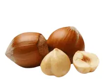
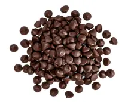

<section class="components">
  <div class="components-container container">
    <h2 class="components-title">
      IT ALL ADDS UP TO ONE EXCEPTIONAL
      <span class="components-title-color">TASTE</span> SENSATION
    </h2>
    <p class="components-descr">
      At Simply Chocolate, we believe that the secret to exceptional chocolate
      is in the details. From the sourcing of the finest ingredients to the
      careful crafting of each individual piece, every step of our process adds
      up to one exceptional taste sensation.
    </p>
    <ul class="components-list list">
      <li class="components-item">
        <a href="" class="components-link milk-chocolate">
          <div class="components-modal-images">
            
            <div class="components-card-modal">
              <h3 class="components-modal-subtitle">MILK CHOCOLATE</h3>
              <a href=""
                ><button class="components-modal-color-btn btn">
                  chocolate
                </button></a
              >
              <a href=""
                ><button class="components-modal-white-btn btn">
                  the benefits
                </button></a
              >
              <p class="components-modal-text">
                Milk chocolate is a solid chocolate confectionery containing
                cocoa, sugar and milk. It is the most consumed type of
                chocolate. Chocolate was originally sold and consumed as a
                beverage in pre-Columbian times. Although four-fifths of all
                milk chocolate is sold in the United States and Europe,
                increasingly large amounts are consumed in China and Latin
                America.
              </p>
            </div>
            <h3 class="components-subtitle">MILK CHOCOLATE</h3>
          </div>
        </a>
      </li>
      <li class="components-item">
        <a href="" class="components-link milk">
          <div class="components-modal-images">
            
            <div class="components-card-modal">
              <h3 class="components-modal-subtitle">MILK</h3>
              <a href=""
                ><button class="components-modal-color-btn btn">milk</button></a
              >
              <a href=""
                ><button class="components-modal-white-btn btn">
                  the benefits
                </button></a
              >
              <p class="components-modal-text">
                Milk is a white liquid food produced by the mammary glands of
                mammals. It is the primary source of nutrition for young mammals
                (including breastfed human infants) before they are able to
                digest solid food.Early-lactation milk, which is called
                colostrum, contains antibodies that strengthen the immune
                system, and thus reduces the risk of many diseases. Milk
                contains many nutrients, including protein and lactose.
              </p>
            </div>
            <h3 class="components-subtitle">MILK</h3>
          </div>
        </a>
      </li>
      <li class="components-item">
        <a href="" class="components-link nuts">
          <div class="components-modal-images">
            
            <div class="components-card-modal">
              <h3 class="components-modal-subtitle">NUTS</h3>
              <a href=""
                ><button class="components-modal-color-btn btn">nuts</button></a
              >
              <a href=""
                ><button class="components-modal-white-btn btn">
                  the benefits
                </button></a
              >
              <p class="components-modal-text">
                Almonds, pistachios, and walnuts are some types of nuts that
                contain healthy nutrients. When eaten as part of a
                nutrient-dense diet, these 9 nuts may offer benefits such as
                reducing your risk of heart disease. They're a good source of
                fiber, healthy fats, and plant protein. Plus, they're great on
                their own, paired with fruit, or added to dishes like salads,
                desserts, and grains.
              </p>
            </div>
            <h3 class="components-subtitle">NUTS</h3>
          </div>
        </a>
      </li>
      <li class="components-item">
        <a href="" class="components-link semi-chocolate">
          <div class="components-modal-images">
            
            <div class="components-card-modal">
              <h3 class="components-modal-subtitle">SEMI - SWEET CHOCOLATE</h3>
              <a href=""
                ><button class="components-modal-color-btn btn">
                  sweet chocolate
                </button></a
              >
              <a href=""
                ><button class="components-modal-white-btn btn">
                  the benefits
                </button></a
              >
              <p class="components-modal-text">
                Semi-sweet chocolate has a cocoa solid content of 35 to 65%. One
                of the best ways to gain an understanding of this type of
                chocolate is to compare it to a different type of chocolate.
                Semisweet is darker than milk chocolate. In a taste comparison,
                it has a slightly bitter taste whereas milk chocolate is sweeter
                and more mellow. This delectable flavor of chocolate is very
                versatile.
              </p>
            </div>
            <h3 class="components-subtitle">SEMI - SWEET CHOCOLATE</h3>
          </div>
        </a>
      </li>
    </ul>
  </div>
</section>
